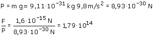

En la expresión del módulo de la fuerza, la
carga q se
pone sin signo

La fuerza eléctrica es unos 180 billones de veces
mayor que el peso
En las partículas subatómicas la proporción entre
carga y masa (q/m) es muy alta. Como consecuencia se puede despreciar
el peso en comparación con las fuerzas eléctricas